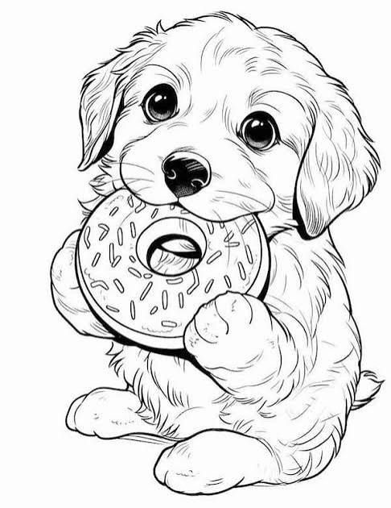

About me and my pets
Hello all, my name is Eric. I am currently a full time student that works part time at a dog daycare. I am mostly a dog person but I love all pets. We have two dogs and we are about to adopt a conure parrot soon. We have Ozzy, the miniature schnauzer and Dio, the pitbull.
My girlfirend and I love to travel around, especially to places we can bring our dogs. We have taken them to a few different states now and they love it. Their favorite is when we go stay at a cabin down in Arkansas. They love to go on hikes down there and they have a lot of different trail options. We bring a dog backpack to wear to carry Ozzy when he gets tired on the trails since he is so much smaller.
A bit more info
I am from a small town in Kansas, not to far from Kansas City. I am currently working towards getting the IT certifications I need to become a technician. For a part time job, I work at a dog daycare near my house and I love it. I get to play with dogs all day and give them all the pets. I love seeing all the different types of dog personalities. There are many different breeds there and they all have things that make them unique.
Feel free to email me any pictures of your pets and tell me what you like most about them.
ebanks5@stumail.jccc.eduDownload this cool coloring page
{kind=link}
